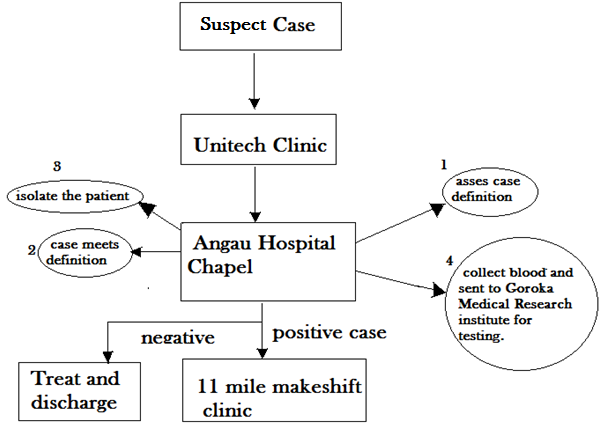
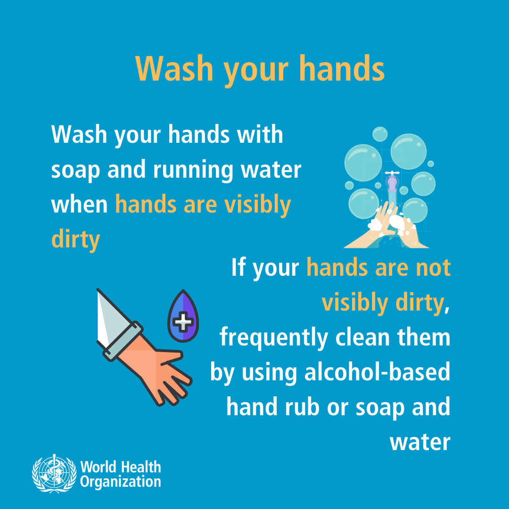
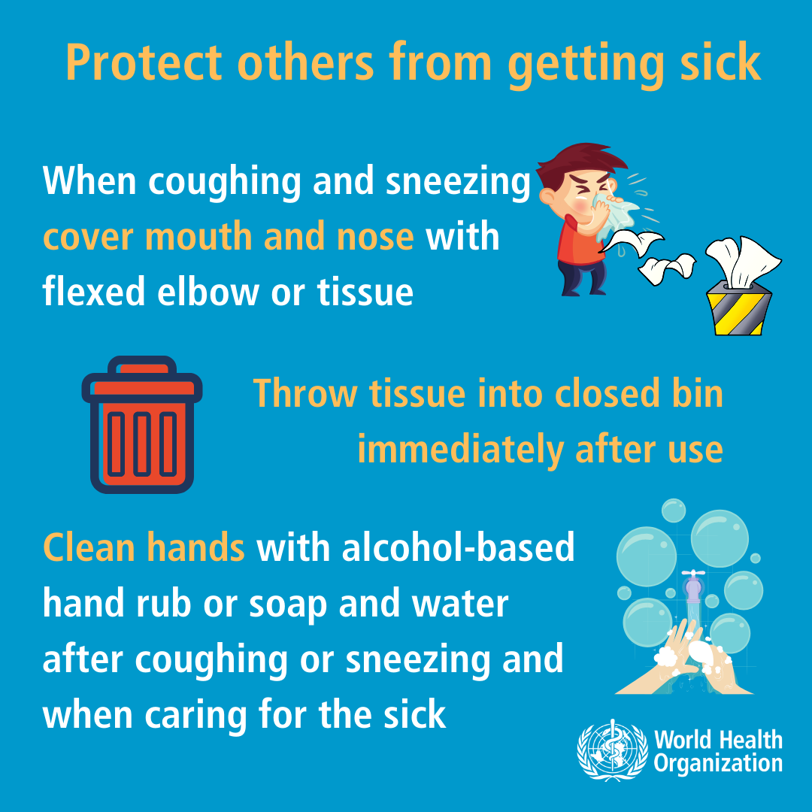
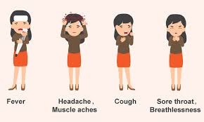

Coronavirus Awareness
Precautions for Residents and Pathways for suspected cases.
HOT LINE NUMBERS
7267 9200 OR 7551 2814
Clinical Pathways for Covid-19
Preventative Measures
-
IF YOU FEEL OR SEE SOMEONE WITH FLU LIKE(COMMON COLD) SYMPTOMS.
-
GO TO UNUITECH CLINIC AS SOON AS POSSIBLE TO SEEK MEDICAL HELP. NEED HELP CALL UNITECH CORONA VIRUS HOT LINE NUMBERS 7267 9200 OR 7551 2814
-
CLINIC WILL DO THE ASSESSMENT OF THE DISEASE
-
IF IS IT LIKE ITS NORMAL FLU CLINIC WILL GIVE TREATMENT AND DISCHARGE.
-
IF SUSPECT CASE IS MET THEN THE PATIENT WILL BE TREATED ACCORDING TO THE FLOWCHART.
Suspected Case
It is very important that you follow the steps.

More Information
-
Wash Hands
 -
Sickness
 -
SYMPTOMS

Preventative Measures
Please take note and follow,help contain the virus.
Simple things To Do.
Please read carefully
Cont...
Read carefully and follow